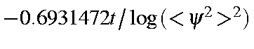

Next: DRC print options Up: The nitrogen molecule Previous: Rate of decay


Next: DRC print options Up: The nitrogen molecule Previous: Rate of decay
Vibrational purity is assumed to decay according to zero'th order kinetics. The half-life is thus ^2)$"> fs, where <y2>2 is the square of the overlap integral of the wavefunction for the original vibration with that of the current vibration. Due to the very slow rate of decay of the starting mode, several half-life calculations should be examined. Only when successive half-lives are similar should any confidence be placed in their value.